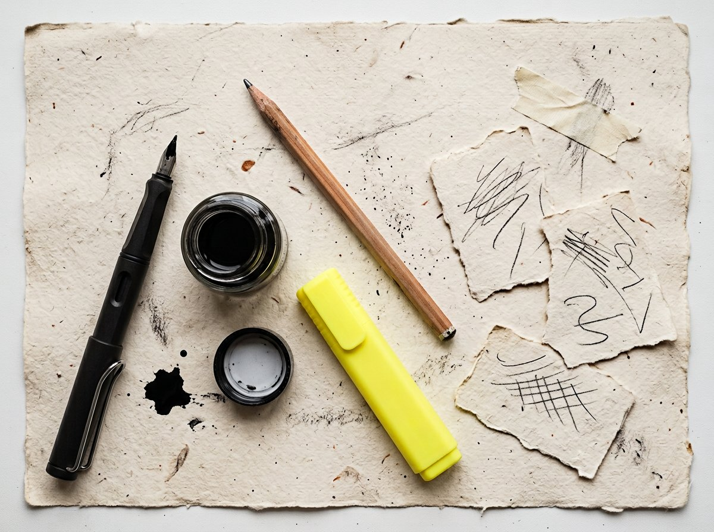
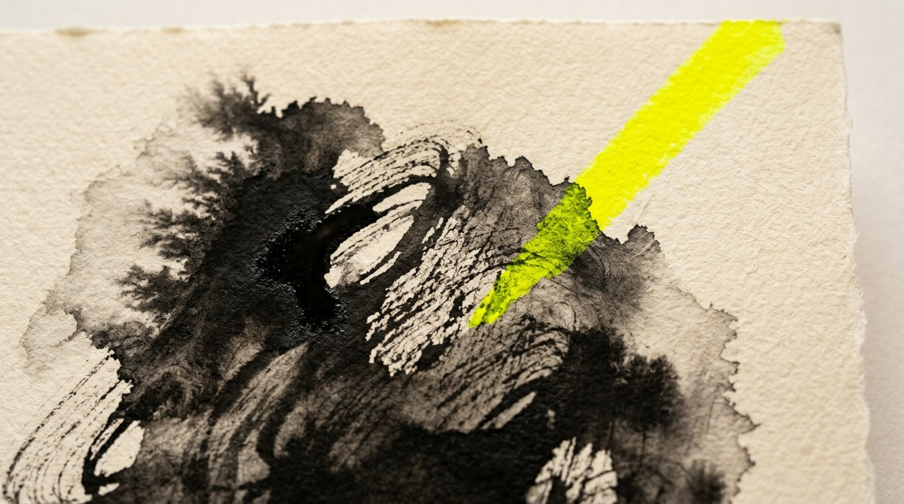

✎
Realtime chat
1:1 and groups. Optimistic send, reply threads, edit, forward, delete-for-everyone, 32-emoji reactions, images with a lightbox, and voice notes with a waveform.
A realtime messenger drawn like a sketchbook. Chats that feel handwritten. A public Network. Colleagues from the places you actually share. Voice, video, stories — and a daily greeting that knows the weather.
No seed accounts. No fake friends. Just people who show up.

Built as one Expo codebase for iOS, Android and the web. Live over Socket.IO. Drawn in India ink on warm pulp.
1:1 and groups. Optimistic send, reply threads, edit, forward, delete-for-everyone, 32-emoji reactions, images with a lightbox, and voice notes with a waveform.
Single tick sent, double delivered, blue when read. Typing indicators, last-seen, unread beads. Receipts catch up the moment someone reconnects.
First notes from outside your contacts land in a Requests inbox. Preview, accept, delete, or block — the main chat list stays a blank page until you say so.
Real 1:1 WebRTC calling, signalled on the same socket. Ring, accept, decline, mute, hang up, and a Calls tab to dial someone back.
Chat-wide timers — 30s, 5m, 1h, 24h — or a timer on a single message. Expired lines are hard-deleted server-side and vanish on every device.
Question plus two to six options, rendered as their own message. Live bars, live counts. Change your vote; everyone sees it move.
Star any message. Pin chats to the top. Archive, mute, search the whole inbox or jump to a match inside a conversation.
Coloured text statuses, viewed rings, tap-through progress. Public, contacts, or a list you pick. They expire with the day.
Username and password, bcrypt, JWT, editable name and about, profile photo. Delete the ID for good — shared groups transfer, nothing is left hanging.
Post text, a photograph, a song, a tag. Choose Original, 1:1, 4:5, 16:9 or 9:16 and keep that box in the feed. Likes and threaded comments update live.
Share publicly, with friends, or just the people you pick
Kept the 4:5 crop. The highlighter is the only loud thing in the room.
#processStudio crew poll is up. Don’t leave me hanging.
Add a college, institution, organization or workplace. Join a registered place. Search its members. Send a connection request. Accepted colleagues become contacts — and a chat opens immediately.
After you sign in, a GLB character speaks once — first name, local Open-Meteo weather, unread chats, message requests, colleague and community counts — then closes itself after “Let’s find the +ones.”

Bricolage Grotesque headlines, Karla body, JetBrains Mono labels. Highlighter yellow used like a felt-tip — sparingly, for focus. Four appearances, one voice.
Warm pulp, India ink, graphite rules. The default sketchbook.
Ink-on-slate. Chalk letters, the same highlighter for read ticks.
High-contrast manga-tech. Cyan action, red for the things that matter.
Expo Go in a minute, or a signed build through EAS. Tablet split view included.
Installable APK. Edge-to-edge chrome. The same ink tiles as the phone on your desk.
A proper PWA — add to home screen, standalone, paper-coloured theme-color.
Socket.IO end to end. Two tabs, two accounts, ticks that move while you watch.
Create a One ID. Add a place. Write to someone. The database starts empty on purpose — the first page is yours.